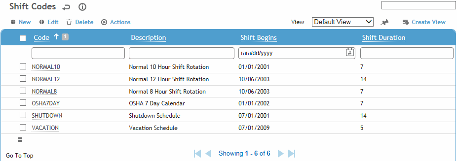
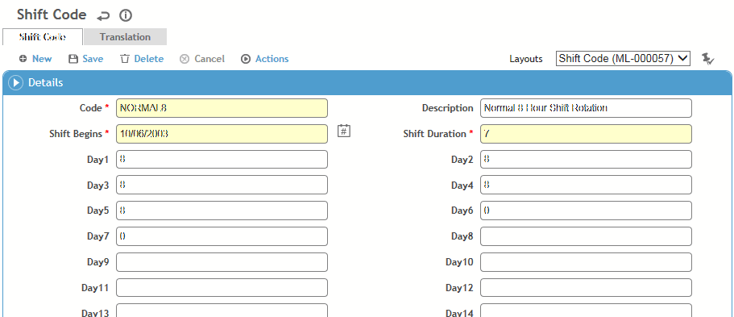

You can define as many shift codes as will be needed to accommodate the varying work schedules that exist today. Cority uses these shift codes to determine lost and restricted time in the Case Management module.
To filter the list of records, enter a few characters in one or more of the fields at the top followed by an asterisk, then press Enter.

Click a link to edit, or click New.

Enter a Code and Description for the shift. This code appears in lost or restricted time records so make it easy to understand, e.g. NORMAL8 for a Monday to Friday 8-hour work day.
In the Shift Begins field, select the date when Cority should start counting based on the defined cycle. This date will be Day 1.
Enter a number to define the Duration of the complete cycle. Some shift cycles span several weeks.
Enter the number of hours worked for each working day of the cycle.
Click Save.